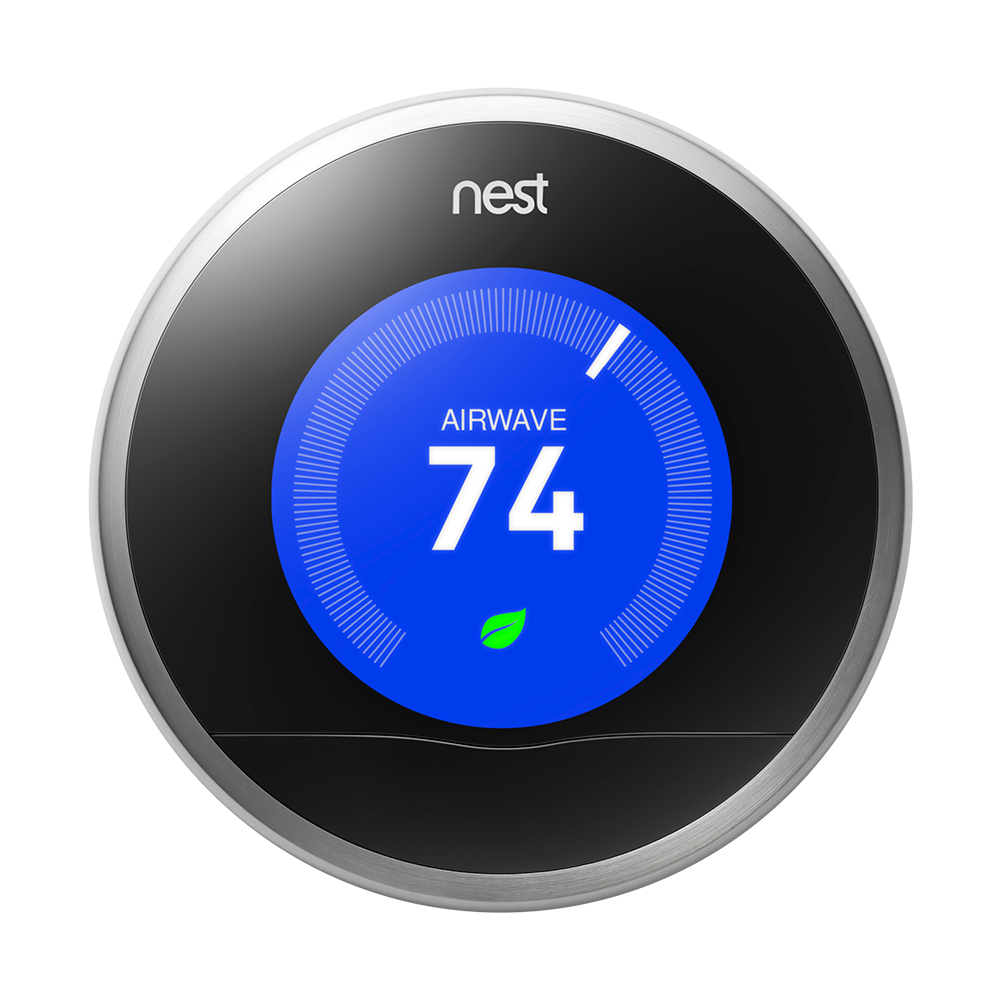

The Nest Learning Thermostat automatically adapts as your life and the seasons change. Just use it for a week and it programs itself.  NEST
Nest incorporates magnetic sensors and trackball technology for reading changes made in the dial. There is also a high density connector with two antennas, one reading "Zigbee" which could be potentially in the future correspond with lighting and refrigeration technology. Nest has